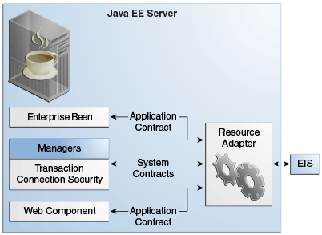

|
Plataforma Java, Edición Empresarial (Java EE) 8 El Tutorial de Java EE |
| Anterior | Siguiente | Contenidos |
Un adaptador de recursos es un componente Java EE que implementa la arquitectura del conector Java EE para un EIS específico. Los ejemplos de EIS incluyen la planificación de recursos empresariales, el procesamiento de transacciones de mainframe y los sistemas de bases de datos. En un servidor Java EE, Java Message Server y JavaMail también actúan como EIS a los que accede mediante adaptadores de recursos. Como se ilustra en la Figura 55-1, el adaptador de recursos facilita la comunicación entre una aplicación Java EE y un EIS.

Almacenado en un Archivo de Adaptador de Recursos (RAR, en inglés), un adaptador de recursos se puede implementar en cualquier servidor Java EE, de forma similar a una aplicación Java EE. Un archivo RAR puede estar contenido en un archivo Enterprise Archive (EAR) o puede existir como un archivo separado.
Un adaptador de recursos es similar a un controlador JDBC. Ambos proporcionan una IPA estándar a través de la cual una aplicación puede acceder a un recurso que está fuera del servidor Java EE. Para un adaptador de recursos, el sistema de destino es un EIS; para un controlador JDBC, es un DBMS. Los desarrolladores de aplicaciones rara vez crean adaptadores de recursos y controladores JDBC. En la mayoría de los casos, ambos tipos de software son creados por proveedores que venden herramientas, servidores o software de integración.
El adaptador de recursos media la comunicación entre el servidor Java EE y el EIS por medio de contratos. El contrato de aplicación define la IPA a través de la cual un componente Java EE, como un enterprise bean, accede al EIS. Esta IPA es la única vista que tiene el componente del EIS. Los contratos del sistema vinculan el adaptador de recursos a servicios importantes que gestiona el servidor Java EE. El propio adaptador de recursos y sus contratos de sistema son transparentes para el componente Java EE.
La Arquitectura de los Conectores de JavaEE define contratos de sistema que permiten el ciclo de vida del adaptador de recursos y la gestión de subprocesos.
La Arquitectura del Conector especifica un contrato de gestión del ciclo de vida que permite que un servidor de aplicaciones gestione el ciclo de vida de un adaptador de recursos. Este contrato proporciona un mecanismo para que el servidor de aplicaciones arranque una instancia de adaptador de recursos durante la implementación o el inicio del servidor de aplicaciones. Este contrato también proporciona un medio para que el servidor de aplicaciones notifique a la instancia del adaptador de recursos cuando se cancela la implementación o cuando se produce un apagado ordenado del servidor de aplicaciones.
El contrato de administración de trabajo de la Arquitectura del Conector garantiza que los adaptadores de recursos utilicen los subprocesos (también llamados hilos o threads en inglés) de la manera adecuada y recomendada. Este contrato también permite que un servidor de aplicaciones administre subprocesos para adaptadores de recursos.
Los adaptadores de recursos que utilizan subprocesos de forma incorrecta pueden poner en peligro todo el entorno del servidor de aplicaciones. Por ejemplo, un adaptador de recursos podría crear demasiados subprocesos o podría no liberar adecuadamente los subprocesos que ha creado. El manejo deficiente de subprocesos inhibe el cierre del servidor de aplicaciones y afecta el rendimiento del servidor de aplicaciones porque la creación y destrucción de subprocesos son operaciones costosas.
El contrato de administración de trabajo establece un medio para que el servidor de aplicaciones agrupe y reutilice subprocesos, similar a la agrupación y reutilización de conexiones. Al adherirse a este contrato, el adaptador de recursos no tiene que administrar los subprocesos por sí mismo. En su lugar, el adaptador de recursos hace que el servidor de aplicaciones cree y proporcione los subprocesos necesarios. Cuando termina con un subproceso determinado, el adaptador de recursos devuelve el subproceso al servidor de aplicaciones. El servidor de aplicaciones administra el subproceso, ya sea devolviéndolo a un grupo para su posterior reutilización o destruyéndolo. El manejo de subprocesos de esta manera da como resultado un mayor rendimiento del servidor de aplicaciones y un uso más eficiente de los recursos.
Además de trasladar la gestión de subprocesos al servidor de aplicaciones, la Arquitectura del Conector proporciona un modelo flexible para un adaptador de recursos que utiliza subprocesos.
El subproceso solicitante puede optar por bloquear (detener su propia ejecución) hasta que se complete el subproceso de trabajo.
El subproceso solicitante puede bloquearse mientras espera obtener el subproceso de trabajo. Cuando el servidor de aplicaciones proporciona un subproceso de trabajo, el subproceso solicitante y el subproceso de trabajo se ejecutan en paralelo.
El adaptador de recursos puede optar por enviar el trabajo del subproceso a una cola. El subproceso ejecuta el trabajo de la cola en algún momento posterior. El adaptador de recursos continúa su propia ejecución desde el punto en que envió el trabajo a la cola, sin importar cuándo lo ejecute el subproceso.
Con los dos últimos enfoques, el subproceso de envío y el subproceso de trabajo pueden ejecutarse de manera simultánea o independiente. Para estos enfoques, el contrato especifica un mecanismo de escucha para notificar al adaptador de recursos que el subproceso ha completado su operación. El adaptador de recursos también puede especificar el contexto de ejecución del subproceso, y el contrato de gestión de trabajo controla el contexto en el que se ejecuta el subproceso.
El contrato de administración de trabajo entre el servidor de aplicaciones y un adaptador de
recursos permite que un adaptador de recursos realice una tarea, como comunicarse con el EIS o
entregar mensajes, entregando instancias de Work para su ejecución.
Un contrato de contexto de trabajo genérico permite que un adaptador de recursos controle los
contextos en los que el WorkManager del servidor de aplicaciones ejecuta las
instancias de Work que envía. Un mecanismo de contexto de trabajo genérico también
permite que un servidor de aplicaciones admita esquemas de entrada y entrega de mensajes.
También proporciona un entorno de ejecución de Work contextual más rico para el
adaptador de recursos mientras mantiene el control sobre el comportamiento simultáneo en un
entorno gestionado.
El contrato de contexto de trabajo genérico estandariza el contexto de transacción y el contexto de seguridad.
La Arquitectura del Conector define los siguientes contratos de salida, contratos a nivel de sistema entre un servidor de aplicaciones y un EIS que permiten la conectividad de salida a un EIS.
El contrato de administración de conexiones admite la agrupación de conexiones, una técnica que mejora el rendimiento y la escalabilidad de las aplicaciones. La agrupación de conexiones es transparente para la aplicación, que simplemente obtiene una conexión con el EIS.
El contrato de gestión de transacciones amplía el contrato de gestión de conexiones y proporciona soporte para la gestión de transacciones tanto locales como XA.
Una transacción local tiene un alcance limitado a un solo sistema EIS, y el administrador de recursos EIS mismo administra dicha transacción. Una transacción XA o transacción global puede abarcar varios administradores de recursos. Esta forma de transacción requiere la coordinación de transacciones por parte de un administrador de transacciones externo, generalmente incluido con un servidor de aplicaciones. Un administrador de transacciones usa un protocolo de compromiso de dos fases para administrar una transacción que abarca varios administradores de recursos o EIS, y usa la optimización de compromiso de una fase si solo un administrador de recursos participa en una transacción XA.
El contrato de gestión de seguridad proporciona mecanismos de autenticación, autorización y comunicación segura entre un servidor Java EE y un EIS para proteger la información en el EIS.
Un mapa de seguridad de trabajo hace coincidir las identidades de EIS con las identidades del dominio del servidor de aplicaciones.
Los contratos entrantes son contratos de sistema entre un servidor Java EE y un EIS que permiten la conectividad entrante desde el EIS: contratos de capacidad de conexión para proveedores de mensajes y contratos para importar transacciones.
| Anterior | Siguiente | Contenidos |